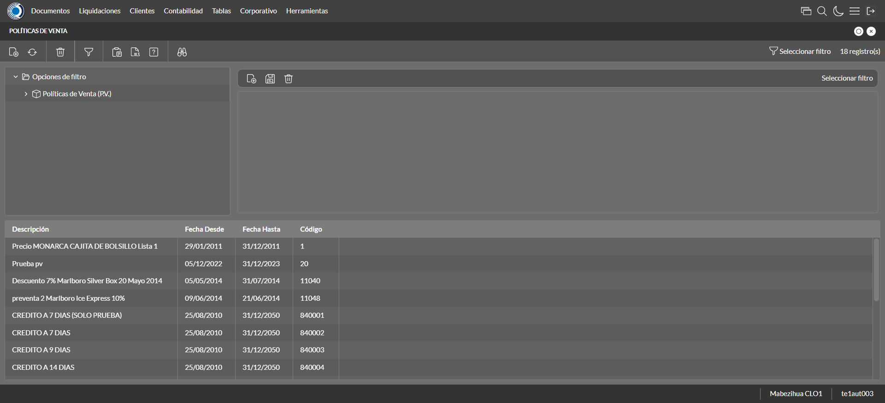
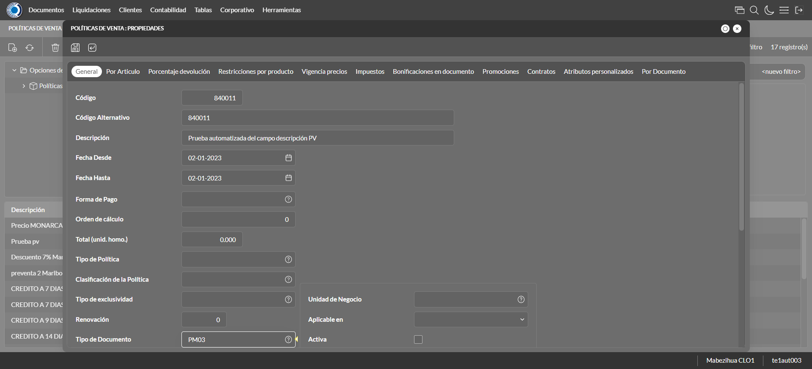
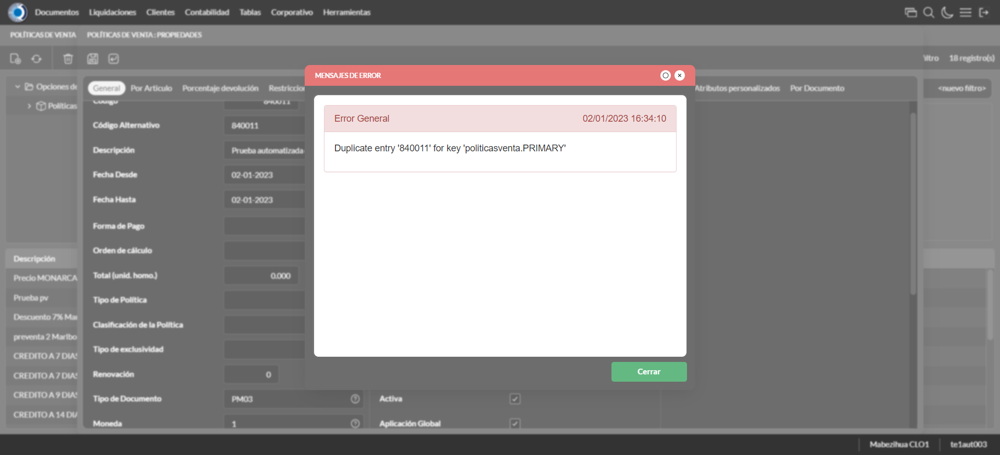
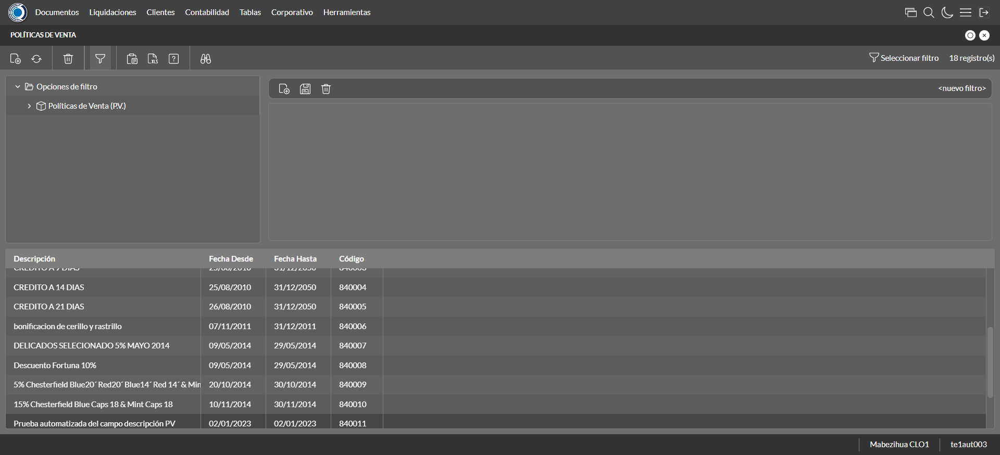

Desarrollado por : Area de Testing PWST
Fecha y hora de inicio : 2023-01-02 10:33:16
Duracion : 0:01:21.363246
Resultado : Total 8，Correctos 6 ，Errores 2 ，Taza de resultado 75.00%
Resumen 75.00% Errores 2 Fallidos 0 Correctos 6 Test realizados 8
| Caso de Prueba | Total | Correctos | Fallido | Error | Detalles | Captura del error |
| PoliticasVenta12.Test: Escenario 1 de Autorizaciones de Credito | 8 | 6 | 0 | 2 | Detalles | |
test |
ft1_1: 2023-01-02 10:33:17,580 - root - INFO - Se abre el chrome
2023-01-02 10:33:19,261 - root - INFO - Entra a la URL
2023-01-02 10:33:19,386 - root - INFO - Maximiza la pantalla
Traceback (most recent call last):
File "C:\Users\jsand\AppData\Local\Programs\Python\Python310\lib\site-packages\selenium-4.4.0-py3.10.egg\selenium\webdriver\remote\switch_to.py", line 87, in frame
frame_reference = self._driver.find_element(By.ID, frame_reference)
File "C:\Users\jsand\AppData\Local\Programs\Python\Python310\lib\site-packages\selenium-4.4.0-py3.10.egg\selenium\webdriver\remote\webdriver.py", line 856, in find_element
return self.execute(Command.FIND_ELEMENT, {
File "C:\Users\jsand\AppData\Local\Programs\Python\Python310\lib\site-packages\selenium-4.4.0-py3.10.egg\selenium\webdriver\remote\webdriver.py", line 434, in execute
self.error_handler.check_response(response)
File "C:\Users\jsand\AppData\Local\Programs\Python\Python310\lib\site-packages\selenium-4.4.0-py3.10.egg\selenium\webdriver\remote\errorhandler.py", line 243, in check_response
raise exception_class(message, screen, stacktrace)
selenium.common.exceptions.NoSuchElementException: Message: no such element: Unable to locate element: {"method":"css selector","selector":"[id="mainFrame"]"}
(Session info: chrome=108.0.5359.125)
Stacktrace:
Backtrace:
(No symbol) [0x00FFF243]
(No symbol) [0x00F87FD1]
(No symbol) [0x00E7D04D]
(No symbol) [0x00EAC0B0]
(No symbol) [0x00EAC22B]
(No symbol) [0x00EDE612]
(No symbol) [0x00EC85D4]
(No symbol) [0x00EDC9EB]
(No symbol) [0x00EC8386]
(No symbol) [0x00EA163C]
(No symbol) [0x00EA269D]
GetHandleVerifier [0x01299A22+2655074]
GetHandleVerifier [0x0128CA24+2601828]
GetHandleVerifier [0x010A8C0A+619850]
GetHandleVerifier [0x010A7830+614768]
(No symbol) [0x00F905FC]
(No symbol) [0x00F95968]
(No symbol) [0x00F95A55]
(No symbol) [0x00FA051B]
BaseThreadInitThunk [0x76796BD9+25]
RtlGetFullPathName_UEx [0x77B58FD2+1218]
RtlGetFullPathName_UEx [0x77B58F9D+1165]
During handling of the above exception, another exception occurred:
Traceback (most recent call last):
File "C:\Users\jsand\AppData\Local\Programs\Python\Python310\lib\site-packages\selenium-4.4.0-py3.10.egg\selenium\webdriver\remote\switch_to.py", line 90, in frame
frame_reference = self._driver.find_element(By.NAME, frame_reference)
File "C:\Users\jsand\AppData\Local\Programs\Python\Python310\lib\site-packages\selenium-4.4.0-py3.10.egg\selenium\webdriver\remote\webdriver.py", line 856, in find_element
return self.execute(Command.FIND_ELEMENT, {
File "C:\Users\jsand\AppData\Local\Programs\Python\Python310\lib\site-packages\selenium-4.4.0-py3.10.egg\selenium\webdriver\remote\webdriver.py", line 434, in execute
self.error_handler.check_response(response)
File "C:\Users\jsand\AppData\Local\Programs\Python\Python310\lib\site-packages\selenium-4.4.0-py3.10.egg\selenium\webdriver\remote\errorhandler.py", line 243, in check_response
raise exception_class(message, screen, stacktrace)
selenium.common.exceptions.NoSuchElementException: Message: no such element: Unable to locate element: {"method":"css selector","selector":"[name="mainFrame"]"}
(Session info: chrome=108.0.5359.125)
Stacktrace:
Backtrace:
(No symbol) [0x00FFF243]
(No symbol) [0x00F87FD1]
(No symbol) [0x00E7D04D]
(No symbol) [0x00EAC0B0]
(No symbol) [0x00EAC22B]
(No symbol) [0x00EDE612]
(No symbol) [0x00EC85D4]
(No symbol) [0x00EDC9EB]
(No symbol) [0x00EC8386]
(No symbol) [0x00EA163C]
(No symbol) [0x00EA269D]
GetHandleVerifier [0x01299A22+2655074]
GetHandleVerifier [0x0128CA24+2601828]
GetHandleVerifier [0x010A8C0A+619850]
GetHandleVerifier [0x010A7830+614768]
(No symbol) [0x00F905FC]
(No symbol) [0x00F95968]
(No symbol) [0x00F95A55]
(No symbol) [0x00FA051B]
BaseThreadInitThunk [0x76796BD9+25]
RtlGetFullPathName_UEx [0x77B58FD2+1218]
RtlGetFullPathName_UEx [0x77B58F9D+1165]
During handling of the above exception, another exception occurred:
Traceback (most recent call last):
File "C:\xampp\htdocs\versiones\automatizaciones\AutoPWST\12PV\testCase\PoliticasVenta12.py", line 32, in test
self.driver.switch_to.frame("mainFrame")
File "C:\Users\jsand\AppData\Local\Programs\Python\Python310\lib\site-packages\selenium-4.4.0-py3.10.egg\selenium\webdriver\remote\switch_to.py", line 92, in frame
raise NoSuchFrameException(frame_reference)
selenium.common.exceptions.NoSuchFrameException: Message: mainFrame
|
|
||||
test_000: Ingresa a la base de datos |
pt1_2: 2023-01-02 10:33:22,491 - root - INFO - Escribe el usuario
2023-01-02 10:33:22,559 - root - INFO - Escribe la contraseña
2023-01-02 10:33:22,618 - root - INFO - Se dio clic en el boton ingresar
2023-01-02 10:33:23,875 - root - INFO - Ejecutar Enterprise
2023-01-02 10:33:27,956 - root - INFO - Cambia entre pestañas
|
|
||||
test_001: Abre menu y ejecuta pantalla |
pt1_3: 2023-01-02 10:33:40,897 - root - INFO - Abre la pantalla de Politicas de Venta
2023-01-02 10:33:42,510 - root - INFO - La pantalla ejecutada es Politicas de Venta
2023-01-02 10:33:42,511 - root - INFO - Captura: C:\xampp\htdocs\versiones\automatizaciones\AutoPWST\12PV\report\img screen：20230102_10_33_42.png
2023-01-02 10:33:43,237 - root - INFO - Se da clic en el registro creado, para proceder a modificarlo.
2023-01-02 10:33:44,946 - root - INFO - Se hace el cambio de pestaña para continuar con la eliminación del registro
2023-01-02 10:33:46,032 - root - INFO - Se da clic en el primer registro de Por Articulo, para proceder a eliminarlo.
2023-01-02 10:33:46,081 - root - INFO - Se presiona el boton 'Eliminar', para eliminar el primer registro de Por Articulo.
2023-01-02 10:33:47,691 - root - INFO - Se da clic en el segundo registro de Por Articulo, para proceder a eliminarlo.
2023-01-02 10:33:47,731 - root - INFO - Se presiona el boton 'Eliminar', para eliminar el segundo registro de Por Articulo.
2023-01-02 10:33:49,340 - root - INFO - Se da clic en el tercer registro de Por Articulo, para proceder a eliminarlo.
2023-01-02 10:33:49,387 - root - INFO - Se presiona el boton 'Eliminar', para eliminar el tercere registro de Por Articulo.
2023-01-02 10:33:49,511 - root - INFO - Se da clic en el boton Guardar; se debe modificar la informacion del registro.
2023-01-02 10:33:50,073 - root - INFO - Se da clic en el registro creado, para proceder a eliminarlo.
2023-01-02 10:33:50,525 - root - INFO - Se presiona el boton 'Eliminar', para eliminar el registro.
2023-01-02 10:33:51,110 - root - INFO - Se confirma el eliminado del registro
2023-01-02 10:33:51,415 - root - INFO - Se presiona el boton 'Refrescar', para crear un nuevo registro igual al anterior.
2023-01-02 10:33:51,673 - root - INFO - Se presiona el boton 'Nuevo', para crear un nuevo registro.
|
 | ||||
test_002: Abre la ventana de nuevo y crear un registro |
pt1_4: 2023-01-02 10:33:53,345 - root - INFO - Se abrio la pantalla para el ingreso de un registro nuevo.
2023-01-02 10:33:53,383 - root - INFO - El campo 'Codigo' si se encuentra visible.
2023-01-02 10:33:53,420 - root - INFO - El campo 'Codigo Alternativo' si se encuentra visible.
2023-01-02 10:33:53,455 - root - INFO - El campo 'Descrición' si se encuentra visible.
2023-01-02 10:33:53,487 - root - INFO - El campo 'Tipo de Documento' si se encuentra visible.
2023-01-02 10:33:53,515 - root - INFO - El campo 'Moneda' si se encuentra visible.
2023-01-02 10:33:53,546 - root - INFO - El campo 'Aplicable en' si se encuentra visible.
2023-01-02 10:33:53,580 - root - INFO - El campo 'Activa' si se encuentra visible.
2023-01-02 10:33:53,616 - root - INFO - El campo 'Aplicación Global' si se encuentra visible.
2023-01-02 10:33:53,676 - root - INFO - Ingresa el codigo del nuevo registro
2023-01-02 10:33:53,750 - root - INFO - Ingresa el codigo alternativo del nuevo registro
2023-01-02 10:33:53,886 - root - INFO - Ingresa la descripción del nuevo registro
2023-01-02 10:33:53,963 - root - INFO - Ingresa el tipo de documento del nuevo registro
2023-01-02 10:33:54,975 - root - INFO - Captura: C:\xampp\htdocs\versiones\automatizaciones\AutoPWST\12PV\report\img screen：20230102_10_33_54.png
2023-01-02 10:33:55,659 - root - INFO - Se dió click en la opción BackOffice y Mobile.
2023-01-02 10:33:55,797 - root - INFO - Se dió click en el checkbox Activa.
2023-01-02 10:33:55,855 - root - INFO - Se dió click en el checkbox Aplicación Global.
2023-01-02 10:33:55,910 - root - INFO - Se hace el cambio a la pestaña Por Articulo para continuar con el registro nuevo
2023-01-02 10:33:56,488 - root - INFO - Se presiona el boton 'Nuevo', para crear un nuevo registro de Por Articulo.
2023-01-02 10:33:58,570 - root - INFO - El campo 'Artículo' si se encuentra visible.
2023-01-02 10:33:58,660 - root - INFO - El campo 'Cantidad Mix Ideal(Packing)' si se encuentra visible.
2023-01-02 10:33:58,694 - root - INFO - El campo 'Tope Descuento 1' si se encuentra visible.
2023-01-02 10:33:58,728 - root - INFO - El campo 'Tope Descuento 2' si se encuentra visible.
2023-01-02 10:33:58,805 - root - INFO - Ingresa el Articulo del nuevo registro
2023-01-02 10:33:58,894 - root - INFO - Ingresa la Cantidad de Mix Ideal del nuevo registro
2023-01-02 10:33:58,973 - root - INFO - Ingresa el Tope Descuento 1 del nuevo registro
2023-01-02 10:33:59,048 - root - INFO - Ingresa el Tope Descuento 2 del nuevo registro
2023-01-02 10:33:59,458 - root - INFO - Se presiona el boton 'Guardar', para guardar el primer registro de Por Articulo.
2023-01-02 10:33:59,777 - root - INFO - Se presiona el boton 'Nuevo', para crear el segundo registro de Por Articulo.
2023-01-02 10:34:00,972 - root - INFO - Ingresa el Articulo del nuevo registro
2023-01-02 10:34:01,046 - root - INFO - Ingresa la Cantidad de Mix Ideal del nuevo registro
2023-01-02 10:34:01,198 - root - INFO - Ingresa el Tope Descuento 1 del nuevo registro
2023-01-02 10:34:01,287 - root - INFO - Ingresa el Tope Descuento 2 del nuevo registro
2023-01-02 10:34:01,577 - root - INFO - Se presiona el boton 'Guardar', para guardar el segundo registro de Por Articulo.
2023-01-02 10:34:01,891 - root - INFO - Se presiona el boton 'Nuevo', para crear el tercer registro de Por Articulo.
2023-01-02 10:34:03,090 - root - INFO - Ingresa el Articulo del nuevo registro
2023-01-02 10:34:03,159 - root - INFO - Ingresa la Cantidad de Mix Ideal del nuevo registro
2023-01-02 10:34:03,289 - root - INFO - Ingresa el Tope Descuento 1 del nuevo registro
2023-01-02 10:34:03,371 - root - INFO - Ingresa el Tope Descuento 2 del nuevo registro
2023-01-02 10:34:03,659 - root - INFO - Se presiona el boton 'Guardar', para guardar el tercer registro de Por Articulo.
2023-01-02 10:34:04,051 - root - INFO - Se da clic en el boton Guardar; se debe crear un nuevo registro.
|
 | ||||
test_003: Repetir el registro creado anteriormente |
pt1_5: 2023-01-02 10:34:05,360 - root - INFO - Se presiona el boton 'Refrescar', para crear un nuevo registro igual al anterior.
2023-01-02 10:34:05,610 - root - INFO - Se presiona el boton 'Nuevo', para crear un nuevo registro igual al anterior.
2023-01-02 10:34:07,777 - root - INFO - Se abrio la pantalla para el ingreso de un registro nuevo.
2023-01-02 10:34:07,826 - root - INFO - Ingresa el codigo del nuevo registro
2023-01-02 10:34:07,897 - root - INFO - Ingresa el codigo alternativo del nuevo registro
2023-01-02 10:34:08,031 - root - INFO - Ingresa la descripción del nuevo registro
2023-01-02 10:34:08,093 - root - INFO - Ingresa el tipo de documento del nuevo registro
2023-01-02 10:34:09,503 - root - INFO - Se dió doble click en el registro de Tipo Documento.
2023-01-02 10:34:10,071 - root - INFO - Se dió click en la opción BackOffice y Mobile.
2023-01-02 10:34:10,131 - root - INFO - Se dió click en el checkbox Activa.
2023-01-02 10:34:10,182 - root - INFO - Se dió click en el checkbox Aplicación Global.
2023-01-02 10:34:10,228 - root - INFO - Se da clic en el boton Guardar; NO se debe crear un nuevo registro.
2023-01-02 10:34:11,245 - root - INFO - Captura: C:\xampp\htdocs\versiones\automatizaciones\AutoPWST\12PV\report\img screen：20230102_10_34_11.png
2023-01-02 10:34:16,745 - root - INFO - Se presiona el boton 'Cerrar', para cerrar el mensaje de duplicidad de llave primaria
2023-01-02 10:34:17,747 - root - INFO - Captura: C:\xampp\htdocs\versiones\automatizaciones\AutoPWST\12PV\report\img screen：20230102_10_34_17.png
2023-01-02 10:34:18,005 - root - INFO - Se presiona el boton 'Cerrar', para cerrar el mensaje de duplicidad de llave primaria
2023-01-02 10:34:18,140 - root - INFO - Se presiona el boton 'Cerrar', para cerrar la ventana
|
 | ||||
test_004: Modificar el registro |
pt1_6: 2023-01-02 10:34:18,343 - root - INFO - Se presiona el boton 'Refrescar', para proceder a modificar el registro.
2023-01-02 10:34:20,030 - root - INFO - Se da clic en el registro creado, para proceder a modificarlo.
2023-01-02 10:34:21,771 - root - INFO - Se modifica el contenido del campo Codigo Alternativo
2023-01-02 10:34:21,976 - root - INFO - Se modifica el contenido del campo Descripcion
2023-01-02 10:34:22,094 - root - INFO - Se modifica el contenido del campo Tipo Documento
2023-01-02 10:34:23,105 - root - INFO - Captura: C:\xampp\htdocs\versiones\automatizaciones\AutoPWST\12PV\report\img screen：20230102_10_34_23.png
2023-01-02 10:34:23,299 - root - INFO - Se dió click en el checkbox Aplicación Global.
2023-01-02 10:34:23,422 - root - INFO - Se hace el cambio de pestaña para continuar con la modificación del registro
2023-01-02 10:34:24,536 - root - INFO - Se da clic en el primer registro de Por Articulo, para proceder a modificarlo.
2023-01-02 10:34:25,746 - root - INFO - Se modifica el contenido del campo Cantidad Mix Ideal
2023-01-02 10:34:25,848 - root - INFO - Se presiona el boton 'Guardar', para guardar la modificación del primer registro de Por Articulo.
2023-01-02 10:34:27,468 - root - INFO - Se da clic en el segundo registro de Por Articulo, para proceder a modificarlo.
2023-01-02 10:34:28,675 - root - INFO - Se modifica el contenido del campo Cantidad Mix Ideal
2023-01-02 10:34:28,734 - root - INFO - Se presiona el boton 'Guardar', para guardar la modificación del segundo registro de Por Articulo .
2023-01-02 10:34:30,372 - root - INFO - Se da clic en el tercer registro de Por articulo, para proceder a modificarlo.
2023-01-02 10:34:32,049 - root - INFO - Se modifica el contenido del campo Cantidad Mix Ideal
2023-01-02 10:34:32,115 - root - INFO - Se presiona el boton 'Guardar', para guardar la modificación del tecer registro de Por Articulo.
2023-01-02 10:34:32,475 - root - INFO - Se da clic en el boton Guardar; se debe modificar la informacion del registro.
|
|||||
test_005: Eliminar el registro creado |
ft1_7: 2023-01-02 10:34:33,532 - root - ERROR - No se dió click en el botón Refrescar, validar que la acción anterior haya finalizado, que el xpath sea el correcto o que la página no presente lentitud
2023-01-02 10:34:33,535 - root - INFO - Captura: C:\xampp\htdocs\versiones\automatizaciones\AutoPWST\12PV\report\img screen：20230102_10_34_33.png
2023-01-02 10:34:37,894 - root - INFO - Se cierra chrome
Traceback (most recent call last):
File "C:\xampp\htdocs\versiones\automatizaciones\AutoPWST\12PV\testCase\PoliticasVenta12.py", line 139, in test_005
raise Exception()
Exception
|
 | ||||
test_006: Cerrar_Navegador |
Correcto |
|
||||
| Caso de prueba | 8 | 6 | 0 | 2 | Taza de resultado：75.00% | |